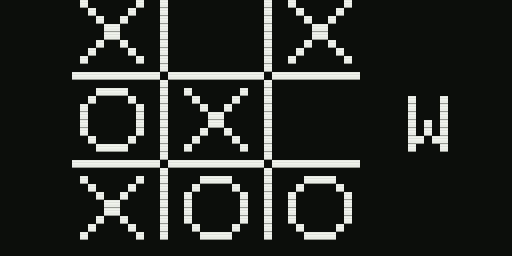

Tic-Tac-Toe
F. Vig · DREAMER no. 11 (1981-07) p. 23 1K RAM


Noughts and crosses against the DREAM, which picks a random open square unless forced to play elsewhere. The player moves first as X unless F is pressed. The result shows as W, L or D, and a wrong key shows a question mark.
Keys
Squares 8 9 A / 4 5 6 / 0 1 2; F = the computer moves first.
Files
| File | Version | Load | Run |
|---|---|---|---|
| Tic-Tac-Toe (Vig).c8 | main | 0200-03DB | C000 |
Listing as transcribed (with notes): tic_tac_toe_vig.txt
Source
DREAMER no. 11 on archive.org, p. 23 (PDF page 25). Author: F. Vig.
Corrections applied
None.
Open doubts
- Key F and the draw screen were not tested.
- After W/L/D the program stops in a jump to itself at 0356.